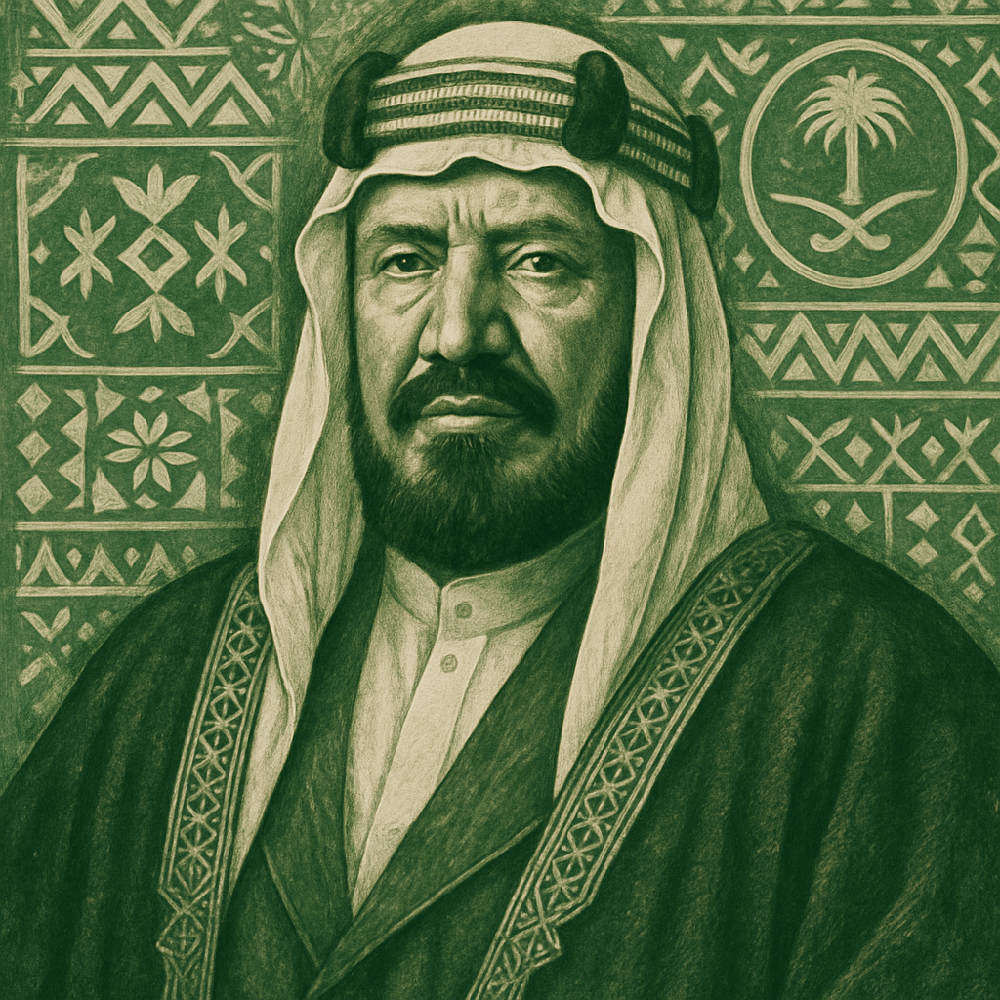
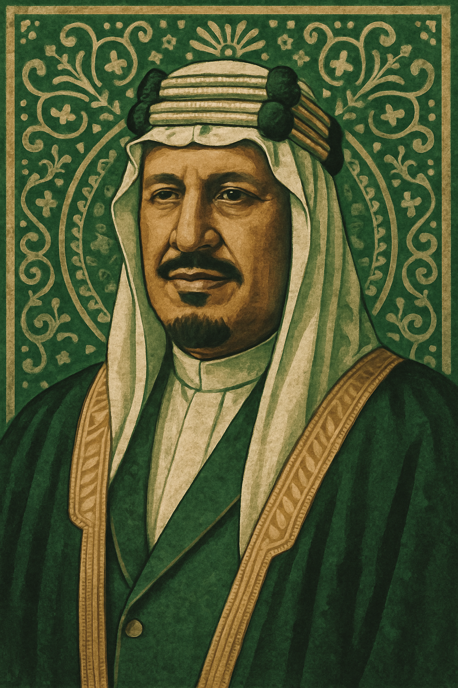
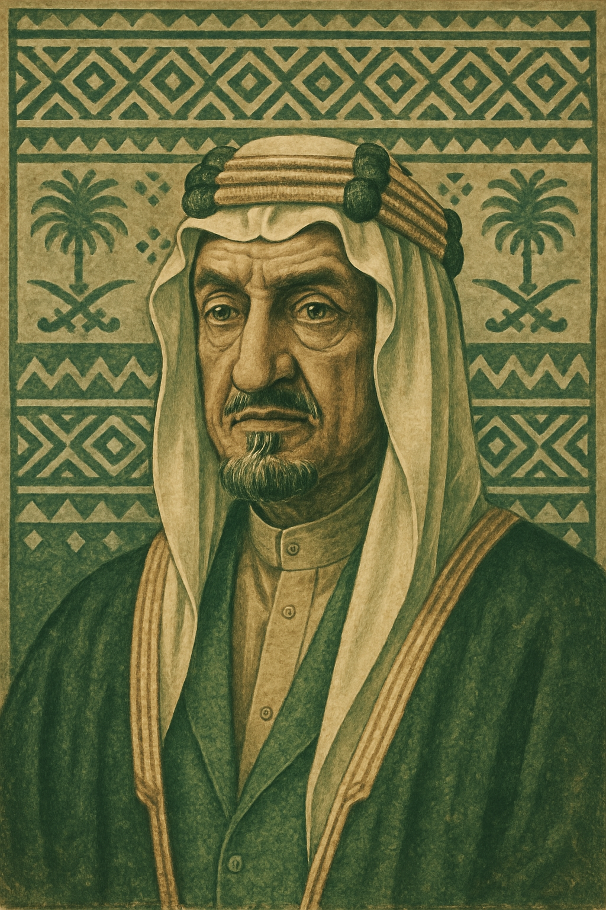
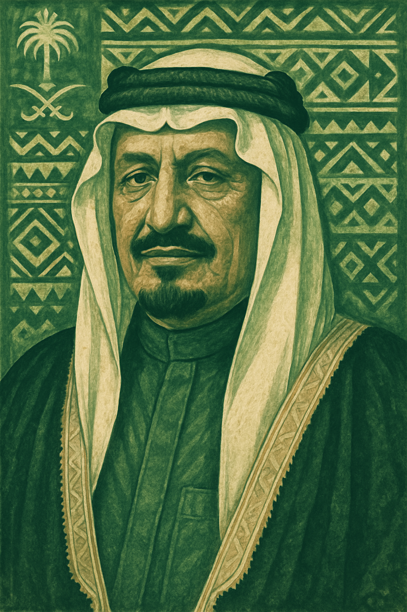
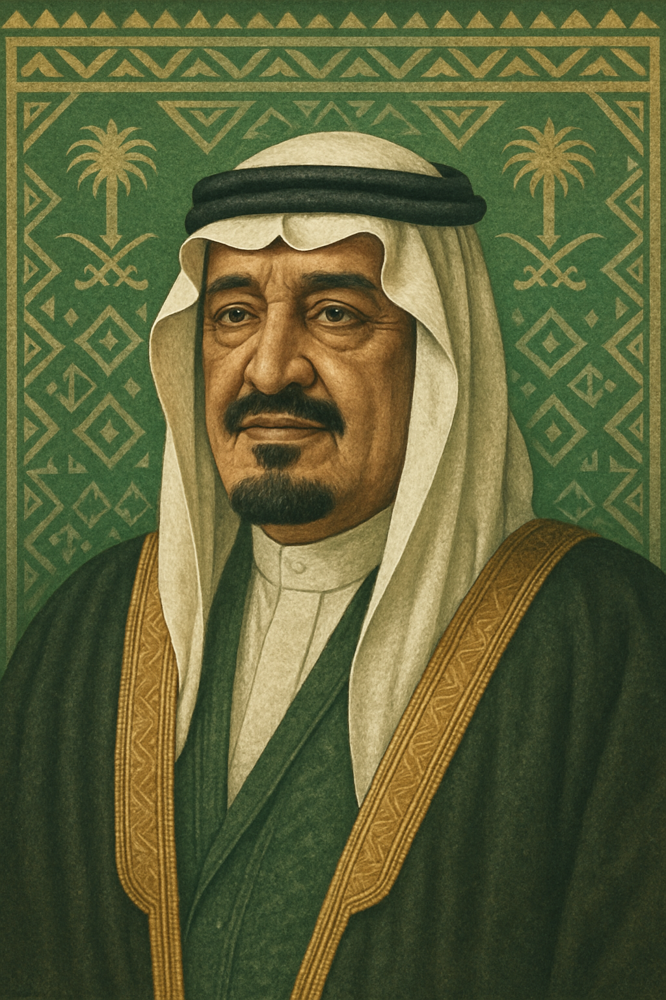
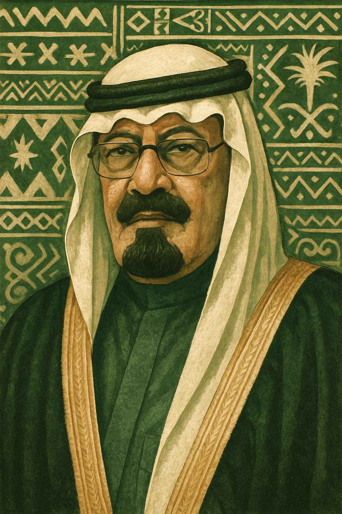

حكام المملكة العربية السعودية

الملك عبد العزيز آل سعود
1932 - 1953

الملك سعود بن عبد العزيز
1953 - 1964

الملك فيصل بن عبد العزيز
1964 - 1975

الملك خالد بن عبد العزيز
1975 - 1982

الملك فهد بن عبد العزيز
1982 - 2005

الملك عبدالله بن عبد العزيز
2005 - 2015

الملك سلمان بن عبد العزيز
2015 - الآن